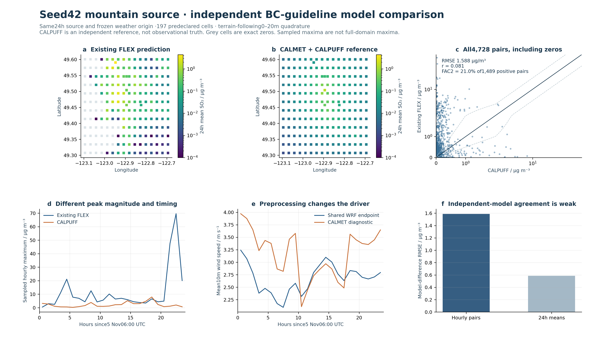
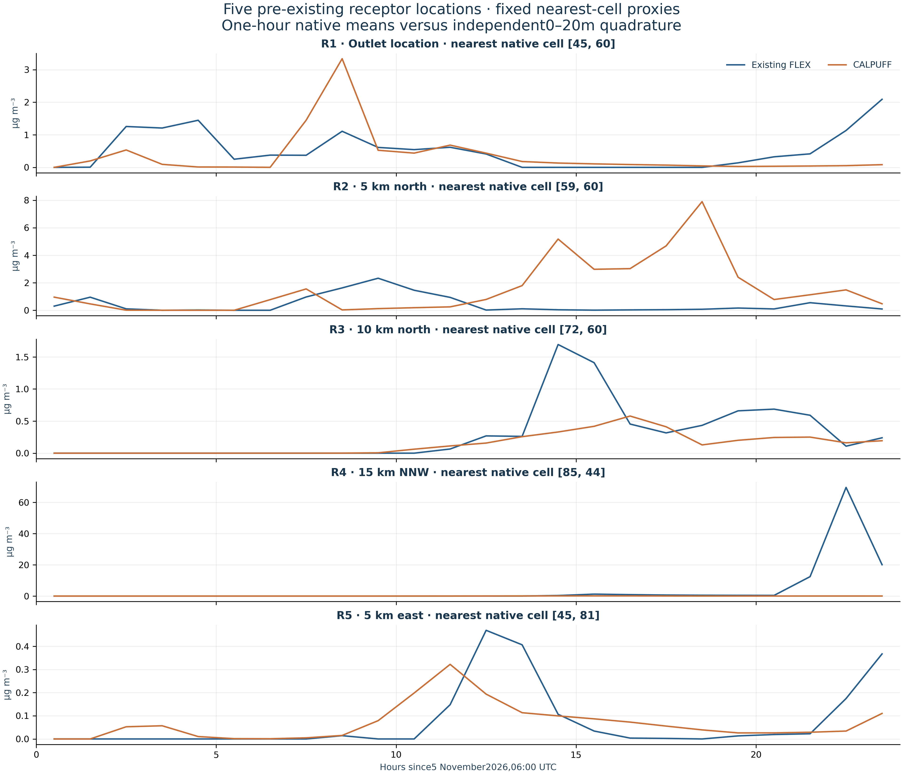

INDEPENDENT REFERENCE / 13 NOVEMBER 2026
Does the mountain prediction
agree with CALPUFF?
Agreement is weak. The existing FLEX prediction differs substantially from the independent CALMET + CALPUFF reference. This comparison does not establish predictive accuracy, and CALPUFF is not observed truth. No concentration fitting or agreement-based selection was used.
Same hypothetical seed 42 mountain source, 5 November 06:00 →6 November 06:00 UTC. The source remains 76.2 m AGL, 2 m diameter, 33 m/s, 668.15 K and 3.97323694 g/s SO₂. Background and chemical transformation are disabled. Both models use their own plume-rise and dispersion calculations.

Numerical comparison
| Hourly pairs | 4, 728 / all retained |
|---|---|
| Concentration RMSE | 1.5877 µg/m³ |
| MAE | 0.2470 µg/m³ |
| Mean bias · FLEX minus CALPUFF | +0.1885 µg/m³ |
| Pearson correlation | 0.0813 |
| Normalized mean bias | +334.0% |
| Within a factor of two · nonzero in either model | 7.8% of 4, 012 pairs |
| Within a factor of two · both positive | 21.0% of 1, 489 pairs |
| Both exact zero | 716 pairs |
| Only FLEX zero | 2, 469 pairs |
| Only CALPUFF zero | 54 pairs |
| 24 h mean RMSE | 0.5856 µg/m³ |
| Sampled hourly peak · existing FLEX | 69.5735 µg/m³ · hour 22–23 |
| Sampled hourly peak · CALPUFF | 7.9038 µg/m³ · hour 18–19 |
| 10 m wind-speed difference RMSE | 1.0577 m/s |
Bias is signed as existing FLEX minus CALPUFF. FAC2 is shown both for 4, 012 pairs nonzero in either model (one-model zeros count as failures), and for 1, 489 both-positive pairs. Both-zero pairs are counted separately. NMB is a relative mean difference between models, not a percentage of forecast accuracy. A large number of low/zero concentrations can make aggregate errors look small while plume location and peaks disagree.
Why this reference?
The BC Air Quality Dispersion Modelling Guideline · July 2022 recommends AERMOD and CALPUFF for detailed assessments. For complex, changing mountain flow, this case uses CALMET + CALPUFF. AERMOD's steady straight-line assumption limits its role here. The guideline accepts version 6; CALPOST 6.221 is used. This 24 h research exercise is not a BC permit assessment.
Actual chain: CALWRF 2.0.3 → CALMET 6.4.0 No-Obs → CALPUFF 6.42 → CALPOST 6.221. CALMET, CALPUFF and CALPOST use the unmodified official Windows executables. CALWRF is compiled from unmodified official source. The official CALPOST hourly and 24 h peak summaries agree with the independently decoded binary concentrations to printed precision.
What was matched—and what differs?
Source location, emission rate, outlet conditions and 24 h UTC period are fixed. CALMET uses the same physical terrain and private JAX WRF-compatible weather origin, then diagnoses its own 500 m wind field, slope/blocking effects and surface mixing. Its 26 h run includes 2 h before source release. The 500 m grid samples existing terrain information; it does not create new terrain detail. CALPUFF's 112.5×112 km transport domain is inscribed in the child weather domain; the original FLEX transport can use the larger parent weather domain. Boundary treatment and possible re-entry therefore also differ.
Receptors were selected before concentration outputs: every eighth native output cell plus the nearest native cells to the five existing virtual receptors. Three Gauss nodes in each horizontal direction and three nodes across 0–20 m approximate a cell/layer mean. CALPUFF point-puff sampling and FLEX's age-dependent bin/CIC output kernel remain different. The five receptor curves below are nearest-cell proxies, not exact point exposure or monitoring stations.

| Receptor-cell proxy | FLEX mean /µg m⁻³ | CALPUFF mean /µg m⁻³ | Hourly RMSE /µg m⁻³ |
|---|---|---|---|
| R 1 · Outlet location | 0.51275 | 0.35718 | 0.80904 |
| R 2 · 5 km north | 0.42554 | 1.5397 | 2.4926 |
| R 3 · 10 km north | 0.29948 | 0.14639 | 0.38216 |
| R 4 · 15 km NNW | 4.4418 | 0.028859 | 14.992 |
| R 5 · 5 km east | 0.074228 | 0.067868 | 0.11938 |
Can an analytical solution provide truth?
A flat, steady, uniform-wind Gaussian plume has an analytical reference. It assumes a fixed effective release height, Gaussian crosswind/vertical spread, a reflecting flat ground and no chemistry or deposition:
This verifies an idealized transport problem, not the present mountain flow. The existing time-varying3D weather, non-flat terrain, thermal rise, deposition and boundary exits do not have that general closed-form solution. No Gaussian curve is presented as truth for this case, and no analytical verification of the complete mountain solver is claimed.
Definitions
Here P is existing FLEX and R is CALPUFF. Native CONC is converted from ng/m³ to µg/m³ by÷1000; CALPUFF g/m³ is multiplied by 10⁶. No standard-temperature ppb conversion, arbitrary factor or background offset is applied.
Limits and unresolved uncertainty
- CALPUFF is an independent guideline-recommended model, not an analytical solution or observed truth. No permit-compliance claim.
- Artificial seed 42 terrain has no corresponding monitoring truth; source uses historical annual-rate priors and frozen forecast forcing.
- Both models share WRF-compatible weather. CALMET adjusts winds, surface fluxes and mixing heights; concentration differences combine preprocessing, plume-rise, turbulence, deposition and sampling differences.
- CALWRF applied its original range QC to 12 negative cloud-water traces; raw weather was not changed. This reference transform is disclosed.
- CALPUFF 500 m diagnostic grid samples existing terrain information; it does not generate new terrain detail, building wakes or resolved small eddies.
- 197 fixed cells and quadrature only; reported sampled peaks are not the full-domain peak. Five virtual receptors are compared using their nearest native cells.
- Native particle bin/CIC and CALPUFF point-puff operators differ;3 x 3 x 3 quadrature approximates terrain-following 0..20 m volume support.
- No calibration, concentration scaling, threshold alteration or agreement-based mask selection. Unit conversions only.
- 24 hours are a research case, not a multi-year BC regulatory assessment. Independent observation validation remains unavailable.
- CALPUFF transport domain 112.5 x 112 km is inscribed in the child weather grid; original FLEX can use the larger parent meteorology. Boundary exits/re-entry differ and are not isolated as a solver error.
- CALPUFF uses default SO₂ dry/wet parameterizations, distinct from FLEX. Concentration quadrature nodes are above ground, so their zero deposition-flux output is not a surface-deposition comparison. Independent surface-deposition agreement is not evaluated here.
- CALWRF's official QC replaced 12 tiny negative cloud-water traces with neighbouring values. Original weather and previous production outputs remain unchanged.
Downloads and provenance


Original result freeze: c223cd826d5a8dced68e829ea5967e05f4f179171d76f56a066d599f38f23883. Third-party executables, source code, manuals and example datasets are retained locally under the CALPUFF licence; they are not redistributed in this site or archive.
Model documentation: CALMET User's Guide; CALPUFF Version 6 User Instructions; official version 6 distribution.